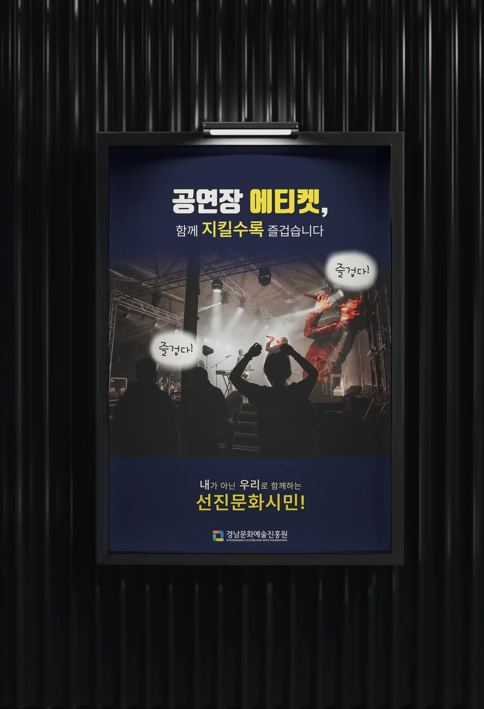
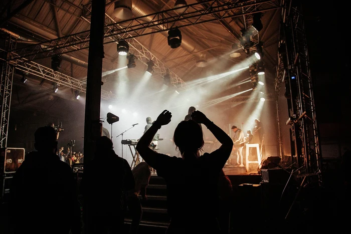
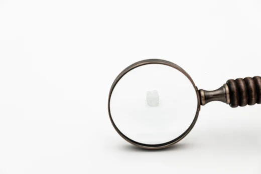

공익 포스터 디자인
Adobe Photoshop · 공익 캠페인 포스터 2종



공연장 에티켓
공연장 에티켓을 지켜야 한다는 메시지를 딱딱한 경고문처럼 전달하고 싶지 않았습니다. 공연하는 사람도, 관람하는 사람도 함께 즐거울 수 있다는 점을 강조하고자 두 사람의 말풍선을 활용했습니다.
이미지 합성
서로 다른 두 장의 사진을 하나의 공연장처럼 보이도록 합성했습니다. 가수의 클로즈업을 추가하고 중요한 문구에는 노란색을 사용해 시선을 끌 수 있도록 구성했습니다.



당신이 공유하는 꿀정보
인터넷에서 흔히 사용하는 ‘꿀정보’라는 표현에서 아이디어를 얻었습니다. 좋은 정보라고 생각해서 공유한 내용이 오히려 누군가에게 피해를 줄 수도 있다는 점을 꿀과 독의 대비로 표현했습니다.
디자인 과정
하나의 물방울을 노란색과 초록색으로 나누어 서로 다른 의미를 담았습니다. 돋보기와 공유 아이콘을 활용해 정보를 공유하기 전에 그 내용이 사실인지 확인하자는 메시지를 전달하고자 했습니다.
